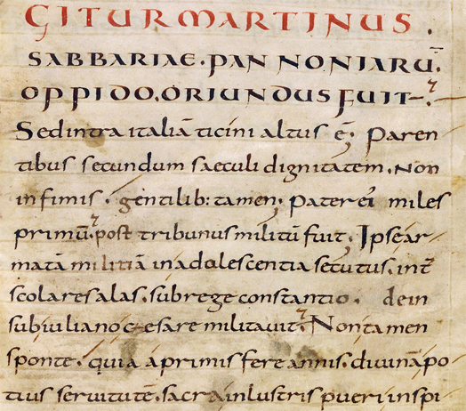

Minuskuła karolińska
Rodzaj bardzo wyraźnego średniowiecznego pisma, wypracowany pod koniec VIII i w IX wieku przez kancelarię cesarską Karola Wielkiego we współpracy ze słynną akwizgrańską szkołą pałacową.
Prace nad poprawieniem pisma były jednym z elementów reformy szkolnictwa, ta zaś fragmentem zakrojonych na szeroką skalę działań na rzecz podniesienia poziomu kultury, zwanych dziś renesansem karolińskim. Żywy udział w reformie szkolnictwa brały szkoły klasztorne z najsłynniejszą szkołą w opactwie św. Marcina w Tours. Opatem tego klasztoru w latach 796–804 był znany uczony Alkuin, przybyły z Anglii w końcu VIII wieku wraz z wieloma innymi mnichami anglosaskimi i irlandzkimi.
Minuskuła karolińska była pismem uniwersalnym, doskonale wyglądała w kodeksach, nadawała się również do dokumentów, choć tu wprowadzano ją znacznie wolniej. Ostatecznie jednak do XI w. karolina przyjęła się w kancelariach większej części Europy, zyskując jednocześnie specyficzną, dość bogatą, manierystyczną ornamentykę. Z upodobaniem zdobiono zwłaszcza pionowe trzonki mocno wyciągniętych w górę liter wysokich. Szczególnie rozciągnięty był pierwszy wiersz dokumentu. Ta odmiana karoliny nosi nazwę scriptura longior.